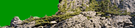

|
По тропам Южного Урала
По тропам Южного Урала |
 |
|
Путеводитель вольного странника
Путеводитель вольного странника |
|
| главная • поиск • карта сайта • последние события |
Рассказ о походе на Хамар-Дабан 2003г.Безвременье. Последняя ночь долгого пути через пол страны, далеко на восток, в те края, где восходит солнце. Здесь это уже не ночь, а утро, и сонный Иркутский вокзал окрашивается в нежно-оранжевые тона восходящего солнца. ... Пишу тяжело, в слова укладывается буквально по паре строчек в день. И, конечно, не потому, что сказать нечего - наоборот, не знаешь с чего приступить, то ли написать вступление, именно Вступление, то ли наоборот, сначала рассказать о всех наших днях по порядку... Необычный поход был, как я теперь понимаю. Вот и о Байкале, как об этом походе, не знаешь с какого краю приступить к повествованию, машешь руками, пытаясь выразить отпечатавшееся в душе ощущение чего-то большого, самодостаточного и важного - или голубого и прозрачного? - или каменно-резного и покрытого мхом? - или застывшего отражающим небо зеркалом? Живая, целостная картина ускользает, прячась за фотоснимками вросших память деталей. Видимо, и впрямь не увезти ее домой, потому как дом ее остался там, и она без него не существует. 30 июля 2003 года, день Первый. Поезд наконец-то едет вдоль южного побережья Байкала, мы прилипаем к стеклам, укладываем наконец рюкзаки. Вот и легендарная для меня Слюдянка, о которой я столько слышал. "Садишься на поезд, два с половиной дня, - и ты уже в Слюдянке, а там уже горы под боком. Что мне нравится в Саянах - так это то, что там воздух совсем необычный", - говорил мне отец. Дальше ехать до Выдрино еще около часа. Рюкзаки уже собраны, и ждут момента, чтобы прыгнуть на спины. Они тоже соскучились по путешествиям. Такое ощущение, что поезд едет по туристическому заповеднику. Под рельсами проносятся туристические места - вот такая-то речка, вот Хара-Мурин. Про каждый распадок можно услышать рассказов не на один вечер. Вагоны медленно тормозят на станции Выдрино, сквозь стекло вижу знакомую полосатую толстовку - это нас ждет Аня, которую час назад здесь высадил другой поезд. Наше пристанище на протяжении двух с половиной суток стуча колесами уезжает дальше на восток, к другим аням и выдринам. Радостная встреча друзей, и знакомство группы, которая теперь уже собралась целиком. Люди присматриваются к тем, с кем им предстоит делить все на протяжении двух недель. Или наоборот, не делить, а как раз объединять. Стоим около станционного домика, душа полна ощущением похода, который вот-вот начнется чьим-нибудь "ну что, пошли что ли?". Проходящий мимо мужик-обходчик улыбается: "А комары вас уже там ждут". Это не дежурная улыбка, как в Европе, - он действительно рад и горд за своих комаров. Взвешиваем рюкзаки, уравниваем немного вес. Сначала нам надо найти улицу Советская дом 1, и оставить там лишний груз: у одного меня пакет с книжками, журналами и прочим, килограммов на 5, и еще палатка екатеринбургская на столько же. Дорога от станции к деревне идет в сторону Байкала среди небольшого пролеска. Байкала пока не видно, гор тоже. Висят низкие тучи, и затянуто все туманом, но дождя пока нет. Настроение, в отличие от погоды, горячее. На Советской,1 нет того мужика, которого мы ищем, но бабуська указывает другой адрес, Спортивная,14. Там договариваемся с хозяином и оставляем у него в сарае все лишние вещи. Дальше путь ведет на рынок, там закупаемся недостающим продовольствием. Ловим стоящий тут же маленький японский грузовичок, и водитель соглашается подвезти нас к началу тропы всего за 150р. Лежим в кузове на рюкзаках, поедаем подаренную водителем клубнику, Андрей в кабине с водителем ориентируется по ГПСу. Останавливаемся прямо у нужного ответвления, так называемая "точка max1". Здесь дорога подходит довольно близко к берегу, решаем сходить познакомиться с Байкалом. Первые впечатления от Байкала, все впечатляются. Погода, конечно, не особо располагает к тому, но не залезть сразу в воду этого священного моря - это оскорбление. Удивляюсь, что вода не такая уж и холодная, в слухах она была холоднее. Зато прозрачная именно так, как должно быть. И дно не обрывается сразу вниз, а идет плавно-плавно, так что до глубины идти надо далеко от берега. Из серых туч начинает морозить мелкий дождик, и хотя ветра нет совсем, вода покрывается легкой рябью. Мы еще немного плаваем, и вылезаем на берег. Ах, как хорошо быть тремя голыми путешественниками, которые только что искупались, и уже со всей дури бегут по мокрому песку берега Байкала, отогреваясь после купания! Разжигаем на берегу Байкала костер из плавника, который здесь в изобилии, и готовим ужин под дождичком, который легко, но неотвратимо утвердился здесь. Привыкаем к Байкалу, осматриваемся по сторонам. Оказывается, берег вполне человеконасыщен - слева кто-то ходит вдалеке по берегу, справа так же вдалеке кто-то так и не вылез из воды, пока мы там были. Уходим обратно к дороге, на половине пути вспоминаю, что забыл топор на берегу, без рюкзака бегом возвращаюсь к почти потухшему костру. Дождевики, сшитые Андрюхой наконец-то начинают использоваться по своему назначению, а не для пугания доброго люда на станциях. Фигура Змея в накидке с большим горбом рюкзака под накидкой на спине, посреди мокрого леса выглядит гораздо сообразнее фигуры того же Змея в том же дождевике, но без рюкзака, зато на жаркой станции под солнцем, громко объявляющего на всю платформу: "А кому рыбки, кому рыбки, пива кому, подходи! Псики-псики! Кому нравятся псики!". Все учатся надевать накидки. Сложный технический вопрос - что сначала надевать, рюкзак или накидку? Запутаться проще простого. Уходим с дороги в сторону гор. Навстречу идут люди с ведрами черники, настроение боевое, несмотря на дождь. Дорога уходит вверх от ручья, потом выравнивается и превращается в тропу. Пара бродов через ручей приводят к тому, что ноги мокрые у всех, кроме Вали. Радости высоких технологий. Наш каждый шаг фиксируется и запоминается ГПСом. Андрюха гордо его несет перед собой как флаг, все бегают вокруг него и заглядывают ему через плечо. "А не промокнет?", "А спутники не потеряет?". Пытаемся что-нибудь придумать, чтобы спасти водозащитный ГПС от воды, на всякий случай, - мало ли? В голову кому-то приходит, что для этой цели можно затолкать ГПС в что-нибудь резиновое и хорошо растягивающееся. Пытаемся пристать к Кате, чтобы она нам выдала это нечто резиновое, она отказывается, говорит, в походе еще пригодится. Еще думаем, что с пупырышками было бы еще лучше - в руке бы тогда ГПС удобнее держать. Доходим до точки "max3", выясняется, что это не граница леса, а просто вагон от Урала. Вокруг мусор и все атрибуты долгой и не особо экологичной стоянки. Дождь не прекращается, но стоять здесь нет никакого желания, решаем идти дальше. Мокрые склоны, лес постепенно заканчивается, под ногами высокая трава. Переходим в очередной раз ручей Большой Мамай, и встаем на ночевку. Все мокрые и замерзшие. Растягиваем костровый тент, разводим костер. Палатки стоят на каких-то буграх, а мы переодеваемся в сухое и подсушиваем у костра под тентом ходовые вещи. Первый день в горах заканчивается темным пасмурным небом, и обе наших палатки-близняшки засыпают под дождем, который размеренно, никуда не торопясь, идет наше общее завтра. 31 июля 2003 года, день Второй. Незаметно подкрался второй день. Дождик все так же шелестит по палатке, хотя сквозь сон я помню, что ночью он несколько раз ненадолго затихал. Спим до 11 часов, отдыхаем, акклиматизируемся к походу. Вылезаю из палатки, одеваю мокрую ходовую одежду. После сухого теплого спальника она вроде как должна казаться кошмаром, но вопреки своим собственным опасениям, особых отрицательных эмоций не испытываю. Мокро? Ну да, мокро. Холодно? Да, прохладно. Под тентом горит костер, и у него можно и согреться, и подсушить на себе одежду. После позднего завтрака решаем все-таки не сидеть здесь на одном месте, а идти вперед, хоть и просвета в погоде не видно. Трава высокая, и напоенная до предела водой, и снизу ее на тебя падает даже побольше, чем сверху. Накидки спасают очень во многом. Пусть даже швы слегка протекают, но накидка, облекающая тебя вместе с рюкзаком, согревает именно за счет того, что под ней ты вместе с рюкзаком греешься сам. Плечи, грудь, спина - все это под накидкой остается сухим, не продувается ветром, и поэтому в дождь можно совершенно спокойной идти. Еще более важно то, что вода с травы, через которую ты идешь, тоже не попадает на тебя, а стекает по накидке. Ноги, конечно, насквозь мокрые, но, к этому лучше относиться по-философски. Надо перейти ручей Большой Мамай. Вчера мы через него перебегали не останавливаясь, сегодня же - это ревущий поток, так что с одного берега приходится кричать, чтобы тебя услышали на другом. Озадаченные, мы смотрим на это чудо природы, которого у нас не бывает. Опыта форсирования водных преград у нас нету, поэтому страшно. Пытаемся найти место получше, проходим чуть выше по течению. Вот камень раздваивает поток. Два Андрея - Безруков и Гладков переходят ручей, держась обеими руками друг за друга. Пытаются кричать что-то с того берега, который от нас всего в 10 метрах - а ничего не слышно. Распределяю всех оставшихся по парам, пускаю Рыбникова Андрея с Аней. Переходят, держась только одной рукой. Нехорошо. Оставшись вчетвером, решаем переходить цепочкой. Иду первый, и уже после нескольких шагов понимаю - у страха глаза велики. Да, вода шумит, и несется, но ее всего по колено, и можно легко и безопасно переходить даже одному, если в руках есть палка. Трехногие монстры могут переходить без палки. Находим старую тропу, она забирает все выше и выше, шумящий ручей остается внизу. Проходим раздвоение Большого Мамая. Вокруг все так же дождь и молочные тучи. Тропа идет вверх, наша дорога в облачное небо. Вдруг сквозь тучи проступает что-то темное. Это скалы. Иногда туман и облака чуть расступаются, и тогда сквозь проносящиеся клочья ваты видно, как с них падают небольшими водопадами несколько ручейков. Иногда облака расступаются еще больше, и тогда видно горы и скалы, которые со всех сторон окружают некое подобие цирка, где среди елок мы встаем на стоянку, пройдя всего часа 4. В любом случае в таких условиях, всегда лучше идти, чем стоять - расслабляться, раскисать не стоит. Мы не ждем хорошей погоды, мы подстраиваемся под то, что есть. Все по привычной уже колее - сваливаешь рюкзак куда-нибудь, где поменьше воды, одеваешь какую-нибудь дополнительную одежду, чтобы сразу не задрогнуть, но все равно замерзаешь. Костровой тент - наше спасение. На мне все одето, кроме ночной одежды, и все мокрое. Разводим костер побольше, и сушу одежду прямо на себе, испаряюсь. Когда-нибудь испарюсь окончательно и выпаду где-нибудь дождем в горной тайге. Проросту молодыми побегами кедра. Карма. Вечное колесо превращений. Даже не знаю, стремиться ли стать лучше, чтобы опять родиться человеком? Разве не лучше всю свою долгую жизнь стоять здесь, ловить мохнатыми лапами ветер, и вглядываться через туман в ручьи, падающие со скал? Всякая судьба имеет свое очарование. Большой костер горит ярко, одежда уже вся сухая, настроение радостное. А когда одеваешь сухие шерстяные носки, и влазишь в сухие же резиновые сапоги - душа поет, и дождь, не прекращающийся вторые сутки, воспринимается как сообразная декорация этих мест. Может, положено ему тут идти? Ухожу спать в палатку, а у костра люди все еще спорят о сахаре и соли, и поют песни. Пожалуй, впервые осознаю, что я не выживаю в эту плохую погоду, и не испытываю свое терпение, которое вскоре собирается кончиться, а вполне гармонично существую здесь и сейчас. Утром я опять одену ходовую одежду и ботинки, все опять сразу же промокнет, но вечером я опять все высушу. Или, как начали мы говорить здесь, в этих местах, "Не высушу - так выжму". И так может продолжаться сколько угодно долго. Дрова - они хоть и мокрые, а все равно дрова. Безвременье. Привез я с Байкала домой кедровую шишку. Сразу есть не стал, подумал - вот настанет время вспоминать поход - достану ее, и вспомню аромат Байкальких лесов. Время все не наставало и не наставало. Сегодня достал наконец ее из холодильника. Она уже не пахнет ни Байкалом, ни кедрами, и смола высохла. У меня осталось только воспоминание об этом запахе. Но и это, наверное, немало? 1 августа 2003 года, день Третий. Первое августовское утро встречает наc тем же самым дождем, что мы проводили в предыдущий день. Встаем в 9 утра. Уже привычно переодеваюсь в ходовую одежду, которая, впрочем, сейчас непривычно сухая. Вылезаю из палатки и бегу к костру под тент. Там кипит жизнь, бурлит вода в котелке, народ собирает рюкзаки. Под углом тента стоит емкость, чтобы не пришлось бегать за водой. Поднявшийся ветер щедро виляет потоком воды, стекающим с тента, но емкость все равно полная. Завтракаем перловой кашей с изюмом, сворачиваемся и выходим в дождь. Проходим мимо водопадов, лезем на перевал. ГПС показывает, что проходим точку "max4". Больше точек в ГПСе нету, отправляемся в свободное плавание. Перевал весь сплошь в воде: лужи стоят, лужи текут в разные стороны. Уходим как ежики в тумане в сторону распадка горы Поляна. Кругом сплошное молоко, "видимость меньше нуля" - это, видимо, как раз про такие случаи. Под ногами невысокая травка, и идти очень комфортно, если привыкнуть, что ноги мокрые - а к этому все уже привыкли. Навстречу несутся мощные ручьи, промывшие себе глубокие, чуть ли не до метра, канавы. Легко перешагиваем, или перепрыгиваем через них. Удивляюсь, какая чистая вода. У нас на Урале привыкли к тому, что если ручей, разбухший от дождевой воды, то она обязательно коричневая, или в лучшем случае - мутная. Здесь же в этих канавах несется прозрачнейшая вода. Если такая вода только и стекает в Байкал, то неудивительно, что он такой прозрачный. Переходим на длинный крутой подъем по траве с небольшим количеством нового знакомого - кедрового стланика. На руке болтается ГПС. В какой-то момент меня что-то будто толкает изнутри - переключаю его на высотомер. 1580 метров - выше я до этого не поднимался. Половина души ощущает неважность каких-то метров, высот. Другая половина в то же время проникается важностью момента, чем-то новым, что происходит в моей жизни. Не успев даже как следует нагрузиться и поднять пульс, вылезаю на вершину горы Поляна, тут 1750м. Никакой поляны здесь нет, и видов, соответствующих высоте тоже, зато хватает ветра и облаков. Не задерживаясь, уходим отсюда прямо по гребню на юго-восток. Гребень острый, с обрывами по обе стороны и стлаником в некоторых местах. Некоторое время продираемся, ищем укрытие от ветра. Скоро с западной стороны находится выемка в скальном склоне. Спускаемся в нее, перекусываем халвой и сухарями. Люди одевают на себя дополнительные вещи, но все равно дубеют. Я же предпочитаю вообще не снимать рюкзак с накидкой. А дальше начинается радость. Идем все так же по верхушке хребта, но характер гребня неуловимо изменился - теперь здесь ровная дорожка шириной в пару метров, от которой вниз по обе стороны идут крутые склоны. Камней нет, идем по траве, иногда только перелезая через заросли стланика. Первая черника, и первые силы на то, чтобы ее есть.
С течением времени облака расходятся все чаще и больше, и горы Хамар-Дабана решают, что мы все-таки достойны, чтобы нам показать красоту.
Мерзнем все меньше и меньше, идем гуляючи по гребню, радостно едим чернику и смотрим по сторонам. Обходим большую гору с шапкой из стланика, первый траверс склона, ноги устают. Выходим на седловину, видим озеро внизу, в цирке. До него терять высоты метров двести, но решаем спуститься и заночевать около него - на берегу озера видны деревья. Спуск дался очень тяжело. Трава мокрая, и еще не поняли, как нужно правильно спускаться. Самые неудачливые и обладатели плохой обуви стерли ноги. Длинной растянутой цепочкой спускаемся к озеру. Когда самые шустрые уже спустились и засели в богатейших зарослях черники, другие еще спускаются и спускаются по склону. Идем в деревья, растягиваем там на всякий случай тент, и разбиваем лагерь. Варится плотный суп, Змей и Рыбников уходят на охоту. Сушимся, отдыхаем, первые помывки. Объедаемся черникой, ее здесь просто море и маленькая речка. Небо расходится, проглядывает синева, верхушки гор освещаются заходящим солнцем, раскидывающим неожиданные радуги. Охотники возвращаются без добычи, "Здесь нет дичи" ("Ушел лось!"), но довольные собой. Планируем завтрашний день, и утомленные всем, произошедшим в этот день, расползаемся по палаткам. 2 августа 2003 года, день Четвертый. Ночью слышу, как несколько раз нашу палатку, стоящую на дне цирка, начинает поливать дождик. Подъем сегодня в 8, на небе облака, но они плывут высоко, и тумана нет. А пока завтракаем, появляются и первые голубые просветы. На завтрак нордик с изюмом и чай с черникой. Последней опять объедаемся, и все равно не в силах объесть хотя бы те заросли, что растут в круге радиусом метров 50 с центром в нашем лагере. Собираемся первый день без дождя, и накидку убираю в рюкзак, тихо надеясь по себя, что она больше не понадобится. Вместе с накидкой в рюкзак идут полтора литра воды.
Там где растягивание группы может привести к несчастью, там группа жестко должна идти вместе. К таким местам относятся подъем прямо вверх по склону, когда камень, спускаемый впереди идущим, летит направленно на остальных. Или, например, тяжелый траверс склона, да вообще - любой сложный переход, когда лучше идти рядом, чтобы, если что, успеть помочь. Зато там, где непосредственной опасности идущему нет, и камень спустить на других тоже нельзя, - там лучше дать людям идти так, как им удобно. Тучи уходят, облачность переменная, часто выглядывает солнце. Идем по хребту, перелезая иногда через скальники и кучки стланика. Люди растягиваются, часто ждем отстающих. Во всю щелкают фотоаппараты, вместе с людьми соскучившиеся по красоте. Перекусываем сухарями и ужасно солеными сырными палочками к пиву. Эти палочки, наверное, выпускают производители пива, потому что после них ужасно хочется пить.
Останавливаемся на обед. Загораю на пекущем солнце, лежа на упругом мху. Любуемся скальными стенами цирка. Обед просто огромный - горох разварился на весь котел. А вместо привычного уже компота - кисель с черникой. Всех разморило на солнце, но пора рвать дальше. От цирка спускаемся по курумнику вдоль ручья некоторое время, но дальше надо залезть собственно на перевал по левую руку от нас, между основным хребтом и небольшой тычкой-отрогом. Сложный траверс, в попытке найти проход меж стланика, потом все-таки последние 20 метров приходится продираться сквозь сплошные заросли. Я опасался худшего, надо сказать, вспоминая ощущения в ногах, когда приходилось у нас на Урале продираться сквозь можжевельник. Иголки у кедрача мягкие, а ветки длинные и толстые. Пять минут работы руками, подтягиваний в основном - и мы уже на перевале. Удивительно, но на самой линии гребня строй зарослей обрывается как ножом. С перевала смотрим на далекий цирк и следующий перевал, там где Осиновка сходит на нет, и начинаем долгий спуск к верховьям Осиновки. Ноги нагружаются и у некоторых стираются. Высокогорная травка кончается, теперь заросли травы по колено, в воздухе марево и пыльца, у меня начинает свербить в носу. По-моему, впервые именно на этом спуске наконец-то понял, как правильно спускаться. Для этого всего лишь необходима палка. Причем не палочки-телескопы (они мне кажутся вообще ненужным буржуйством), - они не предназначены для боковых усилий. Надо хорошую палку, достаточно толстую, чтобы не сломаться, если ты будешь к ней прикладывать усилия, будто собираешься ее согнуть в лук. При спуске ставишь палку, например, справа; левой рукой держишься за ее конец, а правой где-то между серединой и верхним краем, в зависимости от крутизны склона. Получается, я отклоняюсь в сторону, обратную направлению склона, и без палки бы упал, но тут я на нее опираюсь. Если нога соскальзывает, вес больше переносится на палку, и ты не падаешь. В общем-то ничего особенного в технике, но мне просто жаль тех, кто отказывается пользоваться палкой - ноги на склоне разгружаются просто потрясающе. В нижней части склона приходится спуститься в небольшую расщелину с ручьем. Спуск долгий - приходится цепляться за стланик и спускаться по нему. Наконец подуставшие и растянувшиеся, мы один за одним спускаемся к Осиновке, прямо к потрясающему водопаду. Мощный поток двумя каскадами сливается с уступа, вымывая внизу приличную лагуну с зелено-голубоватой водой. После тяжелого спуска по жаркому склону ничего не может быть лучше. В лагуну можно прыгать с уступа, делаю с это с большим удовольствием несколько раз.
Хотел дойти до места разделения Осиновки на два ручья, там наверняка должно быть очень красиво. Андрюха возражает против такого выбора, потому как там будет сложно найти ровное место для палаток. С сожалением соглашаюсь. Встаем здесь, среди елок. Погода отличная, небо ясное. На небо выбирается месяц, зажигаются первые звезды. Тент не натягиваем, а ужинаем и ложимся спать. 3 августа 2003 года, день Пятый. Встаем в 8.45, небо ясное. У нас пока тень, а вот вершины гор и гребни хребтов уже сверкая купаются в лучах солнца. Любители утреннего купания пользуются моментом. На завтрак рисовая каша. Наконец на лагерь наползает солнце, сразу становится жарко. Выходим дальше вдоль Осиновки, и очень скоро доходим до места разделения Осиновки на два притока. Переходим через левый приток, и лезем вверх. По пути заросли молодой осины, кажется, - зеленка, одним словом. Дальше начинается курумник, в одном месте Андрюха падает на камни, но, слава богу, отделался ссадиной на ладони, которую даже не стал обрабатывать. Вылезаем в цирк к двум небольшим озерам, которым очень радуемся. Одно озеро назначается питьевым, другое купальным, и все пользуются обоими по назначению - нет ничего лучше, чем после жаркого подъема искупаться в прохладной чистой горной воде.
По курумнику вылезаем на перевал. Отсюда открывается вид на совсем другие горы. Перед нами на горизонте теперь гора 2220, самая высокая точка нашего похода, и высокие плато хребта Хамар-Дабан. А внизу под нами уже одна из Селенгинок. Очень жарко, солнце печет, воды мало. Совещаемся, как идти дальше, перекусываем. Ем первую в этом походе голубику. Кажется, я наконец-то научился железно различать их. Дело в том, что и цвет листьев и черники и голубики может очень сильно различаться в зависимости, где они растут, да и в цвете ягод можно также ошибиться. Зато если раздавить одну ягоду, то не ошибешься никогда - черника оставит на руках красивые красно-сине-фиолетовые пятна, а голубика внутри светло-зеленоватая и соком не пачкается.
Купаемся в холодной воде. Странные ощущения. Наверное, если бы вас, лежащих в ванной, вместе с ней подняли бы на некоторую высоту, то вы бы поняли, что я там ощущал, плавая по этому озеру и смотря на горы внизу. На обед опять полный котел супа. Валя по случаю праздника души достает чеснок. Компот в этот раз просто царский - в нем и сушеные яблоки, и черника, и голубика - пол котла ягод. Не хочу отсюда уходить, здесь можно прожить долго, и не устать от этой красоты. Солнце печет, перед выходом опять купаемся. Жаль уходить, с этой самой красивой, на мой взгляд, стоянки похода, на высоте 1600 метров. Идем по зарослям голубики, собираем попадающиеся то ли маслята, то ли моховики. Решаем идти дальше верхами, и по крутому подъему лезем на тычку 1800 метров. На вершине, поросшей нашим постоянным спутником стлаником, вольный ветер и виды на все 4 стороны. С юго-запада гремит гроза, но нас, кажется, задело только ветром - тучи сносит в сторону. Как с трибуны смотрим на арену цирка внизу, и намечаем место для ночевки. Цирк очень суровый, стенки необычно скальные, гадаем, как мы будем завтра залезать на перевал, который отделяет нас от горы 2220. По гребню хребта прыгают кузнечики. Спасаясь от наших ног они улетают с гребня в разные стороны. Если идешь по склону, то они практически всегда прыгают вниз по склону, а не вверх. Интересно, а откуда они берутся на самой верхушке, если прыгают преимущественно вниз? Может, там на самом верху идет непрекращающийся процесс их размножения? Хм, надо будет когда-нибудь изучить этот вопрос поподробнее. Спускаемся с тычки, идем по гребню хребта. Он становится все более стальным, постоянно приходится перелазить через камни и стланик. Налево спуститься нет никакой возможности, там скальный обрыв непонятно какой высоты. Справа хоть и травяной, но все равно очень крутой склон. Наконец хребет подходит к своему завершению, и у нас начинаются трудности. Сначала гребень хребта превратился в такую гремучую смесь скал и стланика, что идти поверху практически невозможно. Приходится обходить останцы по крутому склону. Наконец обошли скальники и вылезли обратно на гребень, который тут же закончился крутым спуском, если не сказать - обрывом. Спуск был очень тяжелым, шли медленно, поодиночке, чтобы случайно не спустить камни. По всей видимости, именно этот спуск имела в виду Нора, когда говорила, что веревка там не помешает. После тяжелого, но удачного спуска напало победное настроение. Съедаем по конфетке, фотографируемся с вроде бы забытыми в рюкзаках флагами. Отсюда остается только перейти, почти не теряя высоты, в цирк. Здесь, на одной из небольших возвышенностей, около маленького ручья встаем лагерем. С дровами здесь не особо хорошо, долго искать надо, зато вид просто потрясающий. На ужин гречка с соевым мясом и грибами, и обычный чай. Лежу в палатке, записываю события последних дней. По какому-то наитию ногой отодвигаю створку палатки, стоящей выходом в сторону выхода из цирка, и вижу картину необыкновенной красоты. Вниз уходит ручей, и сбегает каменной рекой курумник. Спускаются ограничивающие цирк хребтики и круто обрывается туда, вниз, земля, будто чтобы не загораживать восхитительный вид на темные силуэты хребта на фоне неба, освещенного уже зашедшим солнцем. Хребет, а за ним еще, чуть в дымке, и еще хребет на самом горизонте, совсем синий... И голубое небо, радующей глаз палитрой переходящее из сине-голубого в желто-оранжевое там, где за хребты ушло солнце. Позвал Рустика и Андрея, повторил ритуал приобщения к этой красоте - лежа в палатке открыть ногой створку и восхищаться... ГПС показывает высоту 1678 метров - самая высокая стоянка. 4 августа 2003 года, день Шестой. Встаем с Рустиком в 8 утра, дежурим. Небо чистое, солнце расцвечивает верхушки гор, до нас в цирке оно, как обычно, доберется чуть попозже. На завтрак молочный геркулесовый суп, собираемся очень долго, выходим только в 10.30. Напрямую на стенку цирка лезть не хочется, поэтому сначала залезаем на боковой хребтик, и по нему уже заходим на нужный перевал. Это гораздо легче - весь подъем получился по травке, а не по сыпуну. Опять траверс склона, и выходим на перешеек к горе-сателлиту, стоящей вплотную к горе 2220. На перешейке несколько неглубоких, по колено примерно, луж. Перекусываем там орехами, халвой и сухарями, купаемся. Как обычно, одна лужа питьевая, другая купальная.
Аккуратно лезем на 2220, но большая часть высоты уже набрана, осталось метров 200 только, и склон достаточно ровный. Главное не скинуть камень на идущих позади. Со всех сторон нас атакуют облака, и два грозовых фронта грозятся подмочить нам подъем. Один почти что накатил, опасно сверкая, но на середине нашего подъема выдохся, и только облегчил восхождение, спрятав ненадолго палящее солнце. Вылезаем на плоскую травяную вершину горы 2220. Мы в самом сердце Хамар-Дабана. Радость тихо переполняет все существо. Произошло что-то очень важное, и должно пройти некоторое время, прежде чем я пойму, что же это все-таки такое. Эта гора - достижение не из-за своей высоты и положения относительно окрестных гор. Отсюда мы начинаем свое возвращение. Дальше на юг мы практически не идем, и каждый шаг начинает приближать нас к возвращению. Здесь состоялся поход, и глядя на счастливые лица друзей, которые прошли и трехдневный дождь, и подъемы, и траверсы, я вижу, что они тоже чувствуют то же самое. Смотрим на все четыре стороны, все горы внизу. Фотографируемся с флагами и без, съедаем неимоверное количество перекусов. Читаем записки, оставленные здесь группами, самая новая датируется 1999 годом. У людей не было погоды, видимость 30 метров. Сейчас, под ярким солнцем и теплым ветром эта записка вроде как будто не об этой горе. Уходим по плоской вершине на юго-запад. Под ногами, прямо как у Визбора, хрустит мох хребта Хамар-Дабан. Выходим на седловину между горой 2220 и безымянной шишкой прямо на юг от нее. Спуск по газонной ровной травке. С седловины спускаемся по ложу ручья. Идем по той же самой ровной травке, легко и приятно, земля сама поворачивается под ногами. Переходим на другой склон долины ручья, и вдруг замечаем на противоположном склоне медведя. Он лезет прямо вверх по крутяку на гребень, идущий от горы 2220. Лезет прямо, не обращая внимания ни на крутизну, ни на сыпуны. Отдыхаем, наблюдаем за ним, как в цирке. А он монотонно залезает на гребень, немного идет по вершине и уходит на другую сторону. Спускаемся дальше в долину, разрезанную ручьями, находим ровное место для палаток. Толпой собираем ягоды для компота, варим сладкий овес на ужин. Вокруг иногда громыхает, небо большей частью в тучах. Рустик наяривает на кубызе, пугая грозу и прося у бурятского высшего существа благосклонности. Ужинаем кашей, и по случаю центрального для похода тортиком из сгущенки, печенья и сухарей. На случай, если медведь решит вернуться в эту долину, Змей скрутил свою двустволку. Варим чай из какой-то травы, и дотемна и дальше поем песни. Голос Змея очень похож на Розенбаума, и если не видеть его, то полное впечатление, что здесь, в сердце Хамар-Дабана, у нашего костра сидит и поет свои песни по Дон и казаков автор "Вальса Бостон". Перед тем как заснуть слушаю, как немного мрачноватые порывы ветра гнут и хлопают тентом нашей палатки. Такой ветер бывает осенью, когда он мотает мокрыми голыми ветвями деревьев и перемешивает холодные низкие тучи. "Это неестественный дождь", - говорил Ондатр в книге "Мумми-Троль и Комета". Что-то должно произойти. Наверное, это первое дыхание приближающейся осени. С теми мыслями засыпаю. 5 августа 2003 года, день Седьмой. "Учитель, когда ловил рыбу, удил, но не забрасывал сеть, а когда стрелял птиц, не бил тех, что сидят на земле" ("Лунь юй", VII: 27.) Ночью все так же порывами налетает ветер и мотает из стороны в сторону тент нашей палатки. Встаем в 8.20, все вокруг в тумане и облаках, которые по нашему долу стекают вниз. Прохладно, если не сказать "холодно", но и холод сообразно вписывается в здешние места. Выходим около 10.15, в облаках уже видны разрывы, но внизу сплошная пелена. Идем по ГПСу через перешеек между хребтом горы 2220 и хамардабанскими полями. Поднимаемся по продавливающемуся мху, среди небольших островков стланника. В одном месте Катя замечает пару глухарей, не успев сообразить об их печальной судьбе. В Змее просыпается охотник, он собирает твою двустволку и уходит крадучись в туман. Некоторое время сплошная тишина, потом: "Бам, бам!", - и еще раз. - "Бам!". Из тумана появляется Рустик с неясным выражением лица, несущий в руках убитую птицу, как раненого ребенка. За ним через некоторое время появляется Змей со второй птицей, довольный удачной охотой. Спускаемся в небольшую долинку, и Рыбников находит на кустах стланника большие и темные уже кедровые орехи. Пробуем в первый раз за поход, что это за звери. Кедровая смола вязнет на зубах и вяжет язык душисто-горьким вкусом. Вылезаем из долинки наверх, и оказываемся на бескрайних высокогорных полях центральной части хребта Хамар-Дабан. Нога утопает в мху сантиметров на пятнадцать-двадцать, и нога напрягается даже при небольшом подъеме. Находим родник, здесь, на поле на высоте за 2000, и устраиваем перекус. Погода, кажется, поворачивается к нам своей приятной стороной. Тучи поднимаются, только вершина 2220 все еще скрывается и не хочет смотреть на проглядывающее иногда солнце. Прогулочным шагом идем дальше, собираем грибы по пути. Скоро выходим на край плато, резко обрывающийся вниз, в долину ручья, стекающего совсем в другу сторону водораздела, в реку Темник. По хрустящей гальке забираемся на крайнюю тычку плато и спускаемся к самому большому из группы озер в верховьях селенгинских ручьев. На берегу озера останавливаемся на обед. Солнце жарит, задержавшиеся облака поспешно разбегаются в разные стороны. Обед просто потрясающий - наваристый суп из глухарей с сухарями и компот. Купаться, несмотря на призывно плещущее озеро почему-то так никто и не собрался. Видимо, все отогревались от пронизывающего утра. Высушиваю на солнце вещи, которые в вещевом мешке почему-то оказались влажными.
Чем быстрее ты передвигаешься, - тем быстрее ты покинешь то место, где тебе хорошо. Хорошо бы когда-нибудь погулять здесь не торопясь. Встать лагерем у какого-нибудь озера, и обойти кругом тычки в радиусе километра. Спорим о том, в туман ли здесь ходил Визбор, и что у него хрустело под ногами, камни, или мох, который здесь действительно хрустит. Спускаемся на седловину между плато и круглым пупырем, и штурмуем его. С пупыря спускаемся на седловину между р.Курта-Гол и долиной Барун-Селенгинки. Спускаться метров 350, но по мягкому мху, да и ноги уже привычные. По пути набираем много грибов, в азартные сборы включаются все без исключения, рассыпавшись веером по склону. Погода ничем не напоминает утреннюю стужу. Наблюдение такое: по одну сторону от Барун-Селенгинки горы острые, по другую тупые. Местность чем-то напоминает Шотландию, какой она мне представляется. Внизу, в долинах виден лес, по которому я даже соскучился.
На ужин праздничный плов и опять компот из черники. "Опять ты мне эту икру поставила! Не могу ее больше есть!". На день насобирали дикого лука и какого-то чаезаменителя с непонятным и незапоминаемым названием. Его целыми ветками добавляем в чай, очень вкусно получается. Записывая вечером в палатке события дня, осознаю, что формально говоря прошла половина нашего походного времени. А по ощущениям, так мы бродим уже давным-давно, уже целую неделю. Целую неделю ходим выше границы леса, по голым хребтам, стоим на седловинах, и вопреки всему не испытываем проблем ни с водой, ни с дровами. Это не чудо, это - горная страна Хамар-Дабан. 6 августа 2003 года, день Восьмой.
Некоторое время пытаемся прорваться через возникшую преграду. Перешеек очень острый, по самой верхушке идти очень сложно, обходить гребень еще сложнее. Хотели мы пройти по хребтам как можно дальше, но, видимо, с ними здесь придется распрощаться. Окинув прощальным взглядом высокогорные поля, столь гостеприимные к нам, уходим с гребня вниз, в сторону Барун-Селенгинки. Спуск очень крутой сначала, по траве с опасным сыпуном, потом менее крутой по высокому стланнику. Пока еще спускались по сыпуну с травой, слышу где-то сзади далекий крик: "Камень!". Оборачиваюсь, и сначала вижу далеко вверху отставшего Валю, а потом замечаю камень размером с кирпич, который постепенно набирая скорость и меняя направление несется от него вниз по склону. Такое было ощущение, что Аня только в самый последний момент успела увернуться - она стояла прямо на пути камня. Кажется, мы так и не восприняли предостережения гор - руководителю чего-то не хватает, чтобы собрать всех и резко заявить о приоритете техники безопасности. На карте в цирке, в который мы спустились, нарисовано озеро, но его что-то не видно. Продираясь по стланику попадаем в глубокие сухие русла, видимо ручьев. Больше всего мне это напоминало какие-то секретные дороги - шириной в пару метров, они с обоих боков были надежно защищены крепкими стенами стланика. Наконец дороги приводят нас в настоящий еловый лес. По крутому и заваленному стволами склону, постоянно оступаясь и оскальзываясь, спускаемся к слиянию двух ручьев. Тяжелый спуск и густой лес уморил всех, встаем на обед в месте, которое меньше всего напоминало стоянку - от горизонтального ствола отпилили верхушку и повесили на него котелки, разведя костер под ними. По-моему, это первый обед, поставленный в месте типа "да все равно лучше не найти". Начинает накрапывать дождик. Может, мы чем-нибудь все-таки разгневали бурхана? Нет, наверное, просто здесь положен дождик иногда, и не нам менять установленные порядки. Уходим с обеда дальше по ущелью вниз. Приходится часто бегать с одного берега ручья на другой, но пока что это не сложно. Дождь все утверждается, и конца тучам нет. Потом мне вспоминалось, что тот спуск дальше был не особо крутой, а тайга не особо тяжелая. Впрочем, боюсь, что это только по сравнению с тем, что нас ждало дальше. Выходим на берег Барун-Селенгинки. В душе теплится надежда, что раз мы вышли на берег большого ручья, теперь-то уж дальше будет идти совсем легко. Чуть выше по течению на противоположном берегу видна полянка. Начальник отряжает отряд в разведку, скидываем со Змеем рюкзаки, бежим разузнавать что там да как, причем ручей перепрыгиваю по камням на замочив ноги. На полянке есть черная смородина - объеденье! - но стоянки, увы, нету - сплошные камни. Мы порешали немного в уме типичную задачу прямоугольной упаковки - и так и сяк, - не влазили сюда наши две палатки. Возвращаемся, и проходим немного ниже по течению и в лесу на берегу, под проливным дождем, встаем среди сосен, задействовав давно уже невостребованный тент. Опять постановка палатки под дождем, опять собирание мокрых дров. Засыпаем уставшие под мерную барабанную дробь дождя, с надеждой на лучшее. 7 августа 2003 года, день Девятый. Встаем часов в 10-11, дождь идет все так же мерно, как шел и всю ночь. Завтрак и сборы под тентом, опять котелки под углом тента ловят воду с прохудившегося неба. Выходим в час дня, по карте до озера всего километров 11. Идем по лесу вдоль воды, иногда уходим чуть вверх по склону, обходя скальные прижимы. Постепенно тайга на склоне становится все тяжелее, запущеннее, склон все круче, а скальные прижимы длиннее и выше. К воде уже не спуститься, вынуждены идти по склону. А если и спуститься к воде, то за ночь ручей распух в разы, и теперь его нельзя не то что по камешкам перебежать, как я это вчера делал, а и в брод перейти опасно. Путь начинают пересекать ручьи, притоки Селенгинки, каждый себе прокопал глубокое ущелье, которое стоит нам поперек маршрута. В такие ущелья даже спускаться тяжело, не то что подниматься. Проходим очень тяжелые 4 километра до распадка с ручьем, спускающимся от горы недалеко от перешейка между тычкой 2035 и соседним горным массивом, до которого мы так и не дошли. Этот отрезок шли со скоростью менее километра в час. К ручью спустились с большими сложностями, через завалы и сползающий с камней мокрый мох. По ручью пришлось пройти вверх по течению, в поисках места, где его можно было легко пересечь, и там, как и давным-давно, в начале похода, устроили попарную переправу. Теперь опять спускаемся к Барун-Селенгинке, теперь уже по левой стороне притока. Решили было пойти вдоль берега, но сразу же натолкнулись на большой скальный прижим. Вверх залезть нет никакой возможности. Андрей попытался, но только спустил в несущуюся внизу воду пару больших валунов и поспешно ретировался. Пришлось идти назад к ручью и искать место вверх по его течению, где можно было бы подняться вверх. Проходя место, где нужно было залезть в воду, я, видимо, решив изобразить тарзана с рюкзаком и привязанной к нему гитарой, повис, оттолкнувшись от берега ногами и держась руками за две толстые ветки, которые меня замечательно выдержали, когда все шли к берегу Селенгинки. Как раз в тот момент, когда я отпустил одну ветку, чтобы взяться за следующую, вторая ветра неожиданно хрустнула, и я со всего размаху с плеском сел в ручей. Больно ушиб левое полужопие о камень, и обидно промочил трусы. Выше по течению ручья вроде бы нашли место, где можно залезть, но подъем дался очень тяжело - сплошными зарослями стланик и завалы деревьев. Дальше опять траверс склона сквозь дремучую тайгу, опять сотня за сотней борьбы с мокрыми ветками, стволами... Дождик постепенно притих, а мы останавливаемся на перекус. Каждому, наверное, двойная порция досталась: шоколад, грецкие орехи, фундук, курага - и того было мало, чтобы чуть-чуть хотя бы силы восстановить. Скоро где-то внизу должно быть слияние Барун- и Зун- Селенгинок. Лес часто перемежается оврагами, и наконец очередной овраг опять оказывается ужасно тяжелым. По карте этого не скажешь - на карте это всего лишь ручей, текущий по склону, и горизонтали склона даже не загибаются практически. В реальности же мы стояли на берегу обрыва и в отчаянии смотрели на шумящую внизу воду. С огромным трудом сползаем в ручей - там навалено только бревен, что переходим его не замочив ноги, которые все равно мокрые. Теперь надо опять лезть на стенку, а ноги почти не передвигаются. Не знаю уж, что там чувствуют остальные... Сколько нам еще предстоит форсировать таких ручьев? Пару? Три? Четыре? Сзади подтягиваются остальные, в их глазах надежда и еще какое-то чувство, которое сложно объяснить. Наверное, это ощущение соучастия и сопричастности. Мы все пройдем, потому что мы - вместе. Штурмуем из последних сил подъем из ручьевого распадка, часто приходится даже подтягиваться на стланике, и попадаем в более или менее проходибельный лес, однако для этого приходится забирать все выше и выше. Облака постепенно расходятся, и вдруг, через прогалину в ветвях, видим внизу - о, радость! - слияние двух Селенгинок, и огромный каменный пляж! В душах людей заиграли победные фанфары, и люди запели, спускаясь по крутому склону, держась руками за ветки, сползая местами на попе по камням. Крутой спуск перешел в заросший пойменный лес, с неровными мелкими буграми и веками всякой мелочи - нам эти последние 150 метров до реки показались просто асфальтом - победное настроение не покидало группу. Вышли на берег реки, на другом берегу виден красивый ровный лес. Не останавливаясь, идем на переправу, - вода хоть и быстрая, но не особо с виду глубокая... Очень поучительный момент. Потом я не раз себя спрашивал - что такое произошло с нами, что мы отважились на столь неподготовленный и опасный поступок? Почему все не остановившись пошли в воду, и никому в голову не пришло, что это опасно и делать этого так и сейчас нельзя? Я шел первый, один, и только с палкой в руках. Когда вода стала подбираться практически к попоясу, в голове зазвенел некий предохранитель: я остановился поперек течения, раскорячился там ногами и палкой, и сказал всем, чтобы за мной никто не шел. Некоторое время мы стояли так на краю течения, вне опасной зоны, и с шутками и прибаутками остывали. Наконец я почувствовал, что я опасно остыл ниже положенного предела, что ноги постепенно перестают слушаться, и что если я сейчас какую-нибудь одну из трех ног подниму - меня смоет. Стараясь не развести панику, твердым голосом попросил кого-нибудь из остальных, кто стояли плотной группой, держась друг за друга, дать мне руку. Руку дали только с третьего раза - видимо, надо было все-таки завопить что есть духу. Вылезли все на берег, остудившиеся, почесали в затылке, прошли чуть вниз по течению, и на галечной косе встали на ночевку. Совсем стемнело, когда у нас наконец приготовился ужин - сытный ужин тяжелого дня. Небо абсолютно расчистилось и засверкало россыпями звезд, и только необыкновенно большое количество воды в Селенгинке, играющей звездным светом в бурунах переката, напоминало о том, что только что воды было много не только в реке, но и в воздухе. Тент на косе, разумеется, не натянешь, да оно и не нужно. Перед сном составляю на берегу небольшой тур из камней, чтобы посмотреть, на сколько за ночь упадет уровень воды. В этот день прошли всего 5-6 километров, но это были, пожалуй, самые сложные километры в моей походной жизни. 8 августа 2003 года, день Десятый. Просыпаемся и встаем в 9.30, на небе высокие плотные тучи, дождя нет. И слава богу. Вода в реке за ночь упала сантиметров на десять. Выходим по левому берегу Селенгинки. Через лес идти совсем не просто, стараюсь идти по каменистым косам и только по необходимости залезать вверх, в лес, обходя прижимы. Переходим на довольно длинный каменистый остров, но с него обратно на левый берег. Здесь река дает небольшой меандр, а мы срезаем напрямик через лес. По пути просто заросли красной смородины, жимолости, а иногда попадается и малина с черной смородиной. Красной, впрочем, больше всего, ее едим горстями, пока не начинает отваливаться от кислоты язык. Оказывается, кусты красной смородины - любимое место существования клопов. Если схватить не глядя богатую горсть смородины, то обязательно один какой-нибудь в кулаке окажется. А если не глядя отправить эту горсть в рот - ... В общем, очень скоро я научился смотреть в то, что ем. Появляется тропа, вначале незаметная, потом-таки совсем глобальная. Скорость моментально возрастает. При переходе через ручей, у которого устроили перекус, тропа резко уходит вверх от реки. Я недоумевая схожу с нее схожу, полагая, что она пошла совсем уж в неправильном направлении. Дальше до самого озера продираемся сквозь высокую, в рост человека траву, и только метров за 200 от южного края озера опять выскочили на ту же самую тропу. Озеро сильно поднялось из-за дождей, и большая часть пляжа оказалась под водой. Встаем на самой юго-восточной оконечности озера, на странной стоянке - трава под палатки примята, а кострища нет. Видимо, кострище было на берегу, и водой поднявшейся оказалось затоплено. Солнце ярко светит, от туч практически не осталось и следа. Река на месте впадения в озеро разбивается на два больших рукава и еще один маленький. Через рукав, на острове, вижу каркас от бани. Пока народ пошел за дровами обратно на лесистый склон, по полуутопленному бревну через маленький рукав Селенгинки, я набрался смелости и перешел протоку. Воды мне было по грудь, и в самом глубоком месте шел на цыпочках, чтобы хотя бы на плечах рубашка осталась сухой. Замерз в холодной воде, но убедился, что стоянка с баней ужасно загажена. Варим обед, отдыхаем, вспоминаем минувшие дни и их радости и лишения. Непрошеным гостем в сознание закрадывается мысль о том, что основная часть похода завершена, и больше не будет ни хребтов, ни полей на высоте 2000 метров, ни диких таежных буреломных склонов. После обеденного лежания пробираемся левым берегом озера. Воды много, поэтому тропа, которая там идет, часто уходит под воду. На стоянке у озера за горой стоит группа отдыхающих - как выяснилось, милиционеров из Иркутска с женами и детьми. Знакомимся, поем песни, обсуждаем здешние места. Они интересуются нашим маршрутом, удивляются, что мы пришли с той стороны озера ("так там же вообще все дремучее!"). Утверждают, что нам крайне повезло, что мы встретили медведя и остались живы. Хозяева угостили нас рыбой, и вареной, и сырой. Я первый раз в жизни попробовал хариуса, только что вытащенного из воды, разделанного, посыпанного солью и перцем. Мне понравилось. Пьющих поют спиртом, - вот это мне совсем не нравится. Пока поем песни (песню Визбора, которую здесь не знают, приходится петь дважды, и даже записать слова), приходит еще один гость - пожилой мужик в штормовке, босиком и с палкой - зовут его Семен, и стоит он в ста метрах на другой стороне от ручья. Чуть погодя идем в гости к нему. Удивительный, редкий человек. В 67 лет зашел на Эльбрус, и сейчас, глядя как он спокойно ходит без обуви, понимаю, что такого здоровья пожелать можно хоть кому. Слушать его можно бесконечно и ничуть не устать и не соскучиться от этого. Приятно просто слушать мелодику речи и то, как он предложения строит - сейчас мы отучились в большинстве своем так говорить. Где он только ни побывал - весь Союз объездил и исходил, от Соловков и Средней Азии до Камчатки. Ходит он без палатки, и огня не разжигает - просто потому что ему ни то ни другое не нужно. Вешает между двумя деревьями веревку, на нее полиэтилен, и так ночует. Для еды размачивает в воде каши ("я с вечера гречневую кашку замочу в водичке - к утру она и доходит"). "Зачем мне все это, если мне и без этого хорошо, если я и без огня нормально питаюсь, и без палатки нормально сплю?". По профессии он - художник оформитель, но как вышел на пенсию, зиму всю живет дома у себя в Москве, а как только снег сходит - уходит смотреть на красивые места. Приходя домой, приносит с собой впечатления, и рисует. Рассказывал он и про особый вид искусства, которым увлекается всю жизнь - создание композиций из разнообразных камней, ракушек и прочих красивых вещей. Если их правильно расположить в воде, да осветить, получается что-то очень красивое и впечатляющее по его словам. Засиделись мы там до темноты, а потом взяли всех своих наквасившихся в охапку и долго в темноте пробирались обратно к лагерю берегом Соболиного озера к позднему ужину. С собой принесли подаренную в гостинец рыбу, мы ее быстренько срубали и разошлись по палаткам. А Валя со Змеем пошли в темноте рыбачить. 9 августа 2003 года, день Одиннадцатый. Встаем поздно, настроение матрасное. После завтрака и положенных валяний, опять пробираемся левым берегом озера пообщаться с Семеном. Его на месте нет, поэтому натоптанной тропой идем вверх по ручью смотреть на водопад. По пути встречаем Семена, он уже успел все осмотреть. Мы дошли только до первого, самого нижнего каскада из пяти, но и он очень красив. От воды дует влажный ветер и холодно, несмотря на солнечную погоду. На поляне рядом с Семеном теперь стоит группа из 4 человек, прошедшим маршрутом через гору Мамай и реку Осиновку. Люди это бывалые, знающие, мы пытаемся узнать у них, где нам лучше провести время, оставшееся до возвращения домой. Они советуют или сбегать на пик Черского, или прокатиться по Круго-Байкальской Железной Дороге до порта Байкал, там переправиться в Листвянку и уже оттуда ехать в Иркутск. Много опять общаемся с Семеном, и к обеду возвращаемся в лагерь. По пути на тропе столкнулись с группой ребят и девчонок из Улан-Удэ, вежливо раскланялись. У них, оказывается, есть катамаран, - прощупываем возможность завтрашней переправы через Селенгинку в районе ее стрелки с рекой Снежной. Народ приятный и интересный, но, болтать вроде бы больше не о чем, поэтому постояв немного на тропе напротив друг друга и пригласив бурятов на вечерний чай расходимся. В лагере выясняется, что Валя со Змеем так пока ничего и не нарыбачили. Обедаем, обсуждаем нашу дальнейшую судьбу. Группа склоняется к тому, чтобы не ходить на Черского, прокатиться по железке вокруг Байкала, да и я сам не прочь постоять на берегу озера, которое вроде как почти уже и забыл. Приплывают на кате наши знакомые из Улан-Удэ. Гостей принимают, угощают чаем, по такому случаю с руководителя удается стрясти аж двойную порцию сухарей. Дальше в ход идет гостевая банка консервов, и мешок бурятских сухарей тоже съели. Приходит Аня, без рыбы, но с мешком жимолости. Народу у нас здесь много, а места мало, поэтому кончается все тем, что она мешок неудачно положила именно в то место, куда чуть попозже решил сесть Валя. Зато сок выжимать не надо. Договариваемся с гостями о завтрашней переправе, и после этого до самого вечера откровенно гоняем балду. Змей учит всех желающих кидать топор, и некоторое время мы азартно пытаемся его воткнуть в бревно. Я мастерю лук из подручных материалов, и изображаю Вильгельма Телля. Вечером на ужин праздничный плов. Змей и Рыбников замечают странные круги на воде и идут рыбачить на песчаную косу, которая начала появляться из-под спадающей воды. Вытаскивают двух рыбин, и махают руками, показывая, каких размеров была третья, порвавшая леску и унесшая ее с собой. Вечером Валя и Рыбников идут через протоку смотреть сеть - она пуста. Рыба Соболиного озера не столь глупа, как можно подумать, и умеет делать выводы. Халявный день подходит к концу.
10 августа 2003 года, день Двенадцатый. Встаем рано, но в 9, как было запланировано, все равно выйти не успеваем - народ собирается медленно. В третий раз за три дня прохожу левым берегом Соболиного озера, но теперь с рюкзаком. Катамаран виднеется далеко впереди, уже около противоположного берега, мы начинаем торопиться. Часто приходится идти по колено в воде, чтобы не пробираться сквозь стланик на склоне. Выходим наконец на тропу, и ускоряемся еще больше. Однако тропа вновь возвращается к берегу, и по случаю поднявшейся воды, приходится шагать по воде и скользким камням. Наконец приходим на конец озера, буряты уже там, катамаран собран и ждут только нас. А мы опаздываем - стыдно... Решаем выходить не дожидаясь наших отстающих - все равно надо будет еще кат собирать. Андрей оставляет Рустика дождаться остальных, а мы рвем вперед! Сказать, что мы шли спортивным темпом - это ничего не сказать. Да, конечно, набитая слоновья туристская тропа позволяла такой темп, но все равно, я даже поддавшись азарту погоди, недоумевал, куда все так бегут? Пропустив в одном месте всех вперед по вполне определенному делу, я отстал всего на пару минут, но потом с максимальной скоростью, на которую был способен, догонял, догонял, и никак не мог догнать убежавших вперед! Минут через 30 мне даже подумалось, что я как-то обошел случайно всех по боковой тропке, и теперь бегу впереди, и потому не могу никогда догнать. Вот это был марш! А тропа вилась вдоль Селенгинки, теперь уже не Барун- и не Зун-, а просто Селенгинки, вытекшей из Соболиного озера. Здесь это была полноводная горная река, шумевшая на каменистых порогах, и вроде бы даже сердито петлявшая меж горных пород, которые еще не успела пропилить. ...А в это время в нескольких километрах позади Рустик вел группу Ходящих Неторопливо. "Рустик!", - спрашивали его Ходящие Неторопливо. - "А ты уверен, что мы идем правильно?". "Уверен конечно", - отвечал им Рустик. - "Дрооон!!!"... Наконец мы выбежали на берег Селенгинки метров за 200 до ее устья. Здесь река устраивала мощный слив, после которого, как обычно в таких случая, самоорганизовался небольшой омут непонятной сине-зеленой глубины, с вдающимся в него большим плоским камнем. Здесь из чехла опять выпрыгнул катамаран и стал приобретать свою настоящую форму.
Змей с Кириллом плывут до устья Селенгинки на кате, а все остальные идут берегом. На песчаной косе у устья Селенгинки останавливаемся на общий обед на 15 человек, в двух котлах. За дровами бегали в лес, к нему нужно подняться на уступ, который, видимо, отмечает уровень весеннего паводка. С удовольствием бродил по этому чистому хвойному лесу - с удовольствием остался бы там наподольше. Буряты собираются плыть до самого Выдрино на катамаране, а мы же выходим на народную тропу, которая здесь идет вдоль Снежной. В самом начале, правда, мы каким-то образом теряем ее, и бродим по лесу, попав в конце концов в такой бурелом наваленный, что на землю даже спускаться не надо - все идти по стволам упавших деревьев. Дальше тропа идет все прямо по высокому берегу реки, открывая красивый вид на хребты и пик Тальцинский на противоположной стороне. Постепенно, километр за километром ложатся под наши ноги, и горы вдруг расступаются и остаются позади. Река вырвалась на свободу из плена гор, а у меня же совсем другие чувства. Мысленно прощаюсь со здешними горами, и надеюсь на скорую встречу. Идем ходками по 25 минут, неподалеку от Выдрино тропа пересекает просеку, и мы пасемся в зарослях малины, но очень скоро начинается цивилизация, и мы выходим на асфальтовую дорогу, с которой ушли в некотором количестве километров дальше на восток. По автомосту переходим Снежную, и скоро видим сохнущий знакомый кат. Валя, Змей и Рыбников идут в Выдрино за вещами, а мы поем с друзьями из Улан-Удэ песни. Мне запомнился гимн Бурятии - здорово было бы, если бы и у нас был гимн, который можно было бы с удовольствием петь всем вместе. Наш народ возвращаются с вещами, ставлю новокупленную палатку, ночевать в ней будем мы с Рустиком. Провожаем друзей, которым пора садиться на поезд, и скоро ложимся спать сами. 11 августа 2003 года, день Тринадцатый. Встали в 6.20, и без завтрака пошли на станцию Выдрино. Погода опять испортилась, накрапывает дождик. Аня меняет билеты, чтобы приехать пораньше домой, поэтому с ней уже пора прощаться. Теплые "до свидания" на холодном мокром перроне, и мы едем на электричке в Слюдянку. За окном разошедшийся дождь чертит косые мокрые иероглифы на стекле, и хмурится серый Байкал. В Слюдянке выясняется, что сегодня туристического поезда не будет. Раздумываем, а не поменять ли билеты и не уехать ли пораньше домой. Тем временем выясняется, что в порт Байкал может поехать рабочий поезд, который здесь называется "мотовоз". Один из таких уже стоит в западном тупике, но он собирается ехать только до Маритуя - это примерно на пол пути до порта Байкал. Рустик пошел искать второй и выяснил, что он сможет нас взять, но только в Култуку, у начала старой дороги. После недолгих совещаний едем на автобусе в Култук. Там уже стоял один мотовоз, но он никуда не собирался ехать. Валя, Змей и Рыбников куда-то ушли, а вдруг ветреный непостоянный мотовоз поменял свое решение - он готов ехать. Ребят, к сожалению, нет, и поезд уезжает без нас. Долго ждем на станции, пережидаем небольшой ливень, и тут выясняется, что следующий мотовоз будет еще очень нескоро, и, к тому же, может и вообще не поехать. Решаем возвращаться в Слюдянку. В Слюдянке заходим на рынок, потом на телефонный пункт, обедаем, потом приходим на вокзал - на путях стоит наш мотовоз, и он вот-вот поедет! Закидываем рюкзаки к нему на платформу, запрыгиваем в кабину - и поезд трогается. Очередной резкий поворот событий этого непредсказуемого дня. Наверное, чтобы мы поярче почувствовали дыхание цивилизации. В Култуку уже можно вылезти из кабины и ехать на открытой платформе. Солнце опять светит и греет, байкальская погода показывает свой нрав, переворачиваясь на 180 градусов. Едем на платформе, любуемся на Байкал, привольно раскинувшийся по правую руку и горы, уходящие скальными ступенями вверх по левую руку.
Жуем конфеты и пряники, фотоаппараты не перестают фотографировать. Над Байкалом летают чайки, а на противоположном берегу сходят к воде далекие горы Хамар-Дабана, и огромные кучевые облака висят, зацепившись за их спины. По мере того, как дело начинает клониться к вечеру, с поверхности Байкала начинают подниматься легкие облачка. На одной из станций слезаем и ждем поезд, который должен отъехать километра на 4 назад и сгрузить шпалы. Валяемся на обрывистом берегу Моря, чайки летают и протяжно насмехаются. Время, так ускорившее свой бег утром, опять неторопливо замирает. Поезд, сгрузивший шпалы опять подбирает нас, и едет дальше. Вдоль дороги появляются жилища человека - иногда это разваливающиеся домики, а иногда наоборот, современные коттеджи, и теннисными кортами и бассейнами.
Солнце скрылось за горами, чистое синее небо начало темнеть, и только на далеком противоположном берегу кучевые облака все так же висели над Хамар-Дабаном. За дровами нам с Рустиком пришлось лезть очень высоко. Несколько сушин полетели со склона, в несколько приемов докатившись практически до самого лагеря. Ужинаем рожками и чаем с печеньками. Когда на Байкал опустилась темнота, ветер абсолютно стих. Из-за гор Хамар-Дабана появилась ярко-оранжевая луна, отбросив на воде сначала дорожку, а потом и просто маленькое пятно, почти ровное свое отражение, замершее как и все вокруг. Байкал затих. Полная тишина, нарушаемая только нашими собственными звуками: ложки звякают о кружки, иногда шуршат пакеты. Говорим тихо и мало, будто не хочется невзначай разбудить спящий Байкал. На противоположном берегу кое-где зажглись далекие огоньки - Байкальск с его знаменитым комбинатом... Безвременье. ...Лежу в темноте на берегу у кромки стихшей воды и, не в силах оторваться, смотрю на луну и звезды. Рядом со мной, такой же притихший, замер кто-то большой-большой, невообразимо прекрасный, многозначный и устало-разумный. Не вставая протягиваю ему свою руку, и он принимает ее, от нашего рукопожатия разбегаются неслышные волны, которые добегут до каждого залива, отзовутся чем-то в каждом скальном прижиме. Прикосновение к вечности, когда действия невозможны, слова не нужны, а мысли излишни. Здесь и сейчас можно увидеть одно из многочисленных лиц Байкала, потому что я чувствую, как он лежит рядом со мной, и вместе со мной смотрит в звездное небо. Подняться на локте, и заглянуть в его лицо, увидеть отражение звезд в его глазах, понять и принять его чувства, - того, кто здесь смотрится в это небо уже целую вечность. Не хочу подниматься. Когда-нибудь мы посмотрим друг другу в глаза - он снизу, а я сверху. Иду спать в палатку, и уже лежа в спальнике, пока глаза не закрылись сами собой, смотрю через окно палатки, обращенное к воде, на яркую луну, декорации из высоких облаков и пятно света на далекой-далекой ряби... 12 августа 2003 года, день Четырнадцатый. Просыпают меня в половине двенадцатого, к позднему завтраку. Сегодня, впрочем, у меня собственный завтрак - замоченный с вечера овес по рецепту Семена. Вполне съедобно. После завтрака часа два играем с Андрюхой в шахматы. Змея нет, он с самого утра ушел на охоту. Валя с Рыбниковым Андреем идут в гору за дровами, а я кипячу воду, мою голову и первый раз за поход бреюсь, успев для истории сфотографировать небритую физиономию. Небо затянуто высокими облаками, иногда накрапывает мелкий дождик. В палатке читаем, играем в шашки и шахматы. На вечер назначен тортик из печенек и сгущенки. Сидим с Рустиком в палатке перед окном и воображаем, что мы - растения, посаженные здесь кем-то, проросли и глубоко пустили корни. Или обезьяны, которых посадили в клетку и поставили здесь, на берегу Байкала. Воображение играет - вот инопланетяне в зеленых скафандрах ходят по берегу, берут пробы воды, вдали огоньки - это их корабль завис на стационарной орбите. Мы все сидим, не сдвигаясь с места, когда восходящая луна зажигает на горизонте вулкан с оранжевыми сполохами пламени, а может, это просто кто-то идет далеко-далеко со свечкой в руке. Совсем в темноте палим костер, и рассуждаем о будущих походах... 13 августа 2003 года, день Пятнадцатый. Ночью начался дождь, и к утру еще и усилился. Вода протекает по шву и скапливается в прогибе плохо натянутой палатки, оттуда капает на внутреннюю палатку, а оттуда уже на спальник и пробирается холодным ручейком к ноге. Натягиваю веревку от конька, ликвидирую лужу и задумываюсь о том, чтобы по приезду домой хорошенько проклеить швы. На завтрак, подоспевший к 12, пшенка. Катя сразу готовит и плов на обед. Дождик кончается, мы сворачиваем лагерь и идем пешком обратно в Маритуй. Радостная бабушка продает нам 4 сушеные и несколько соленых рыб, молоко и пол буханки хлеба. Насколько все-таки люди здесь другие. Если где-то живет душа настоящего русского человека, то именно здесь, в Сибири, в маленьких деревеньках. На станции обедаем, со стороны порта Байкал подъезжает туристическая электричка. Валя и Змей садятся в нее и уезжают в Иркутск. С другой стороны подъезжает Мотаня - тепловоз с тремя вагонами. Небольшая суета - сгружается хлеб и прочие продукты для живущих здесь людей. Вагон набит турьем, мы сидим в одном купе с парой из Чехии, довольно сносно говорящими по-русски. Поем песни на гитарах к полному их удовольствию. На прощание, перед тем, как выйти на одной из многочисленных турбаз, которые здесь понатыканы вдоль побережья, чешка выдает потрясающую фразу: "Хороните ваши песенки перед американской музыкой". За окном необычный Байкал - без противоположного берега. Приезжаем в порт Байкал уже в сумерках, и с очень большим опозданием. Последний рейс на сегодня парома "Бабушкин" уже состоялся, и толпа в полсотни туристов в растерянности стоит у причала. Все кроме нас уехали в итоге на частнике, решившем содрать по 100 рублей с человека, когда билет на паром стоит 18. Мы же пошли по берегу Ангары в поисках места для ночевки. Неудачно сунувшись в пару домиков, мы повернули по дороге, уходящей вверх от Ангары по распадку, в темноте перелезли через забор чьего-то покосного луга и за кустом поставили одну мою палатку. 14 августа 2003 года, день Шестнадцатый. Всю ночь лил дождь, то усиливаясь, то затихая. Встали в 6.30, собрались и пришли обратно к пристани. Скоро подошел "Бабушкин", и забрал нас в путешествие через Ангару, делая небольшой крюк по Байкалу. Несмотря на ветер и дождь, мы постепенно собрались на носу теплохода - было чем полюбоваться. Сегодня Байкал штормило. Серый, как и низкие тучи, он плескался в разные стороны белыми барашками волн. Минут через 25 причалили к пристани в Листвянке. Автобусная станция находится прямо рядом с пристанью. Мы с Рыбниковым остаемся ждать автобуса на станции, а остальные уходят гулять под дождем и искать рыбу. Рыбу они не нашли, зато нашли картинную галерею, про которую мы все читали у А.Сидоренко в походном романе "Заяабари". В одиннадцать подъехал автобус и увез нас в Иркутск. Безвременье. Взгляд сверху. "Видно где-то в дали голубой Некоторые мои знакомые 11 из 12 месяцев года проживают в ожидании одного, центрального месяца. Все остальное время они работают, чтобы как-то прокормиться, продышаться, просуществовать, а ощущают себя счастливыми людьми только в этот один единственный месяц, который им остался. В городе не замечаешь этой глобальной, вселенской несправедливости, когда одни люди вынуждают других людей делать то, что им не нужно. Тебя по рукам и ногам держат люди вокруг: и близкие, с кем видишься каждый день, и просто знакомые, кого встречаешь изредка, и незнакомые, встреченные в транспорте люди, которых скоре всего больше не увидишь никогда. Тебя держат - и нет возможности подняться над всем и охватить взглядом всю свою жизнь и понять, все ли ты делаешь правильно. Верю, когда-нибудь работа обязательно будет не каторгой а радостным делом. Учеба будет не тупым впитыванием придуманного до тебя и без тебя, а сжимающим от восторга сердце прорывом в Неизведанное. А походы будут не временем, когда ты хотя бы немного можешь скинуть с себя проблемы города, а непрерывными отрезками Путешествия, которому нет конца. Путешествия длиною в жизнь. Эта вера дает мне силы жить. А пока - уже пора печатать карты для следующего похода!
Приложение Карта с наложенным на нее маршрутом и путевыми точками Описания путевых точек Полная карта района (2 км) Файл карты для OziExplorer с привязкой Путевые точки похода в формате OziExplorer Трек похода в формате OziExplorer 18.03.04
|
|||||||||||||||||||||||||||||||||||||||||||||||||||||||||||||||||||||||||||||||||||||||||||||||||||||||||||||||||||||||||||||||||||||||||||||||||||||||||||||||||||||||||||||||||||||||||||||||||||||||||||||||||||||||||||||||||||||||||||||||
| назад | вверх | |||||||||||||||||||||||||||||||||||||||||||||||||||||||||||||||||||||||||||||||||||||||||||||||||||||||||||||||||||||||||||||||||||||||||||||||||||||||||||||||||||||||||||||||||||||||||||||||||||||||||||||||||||||||||||||||||||||||||||||||


| Сайт: http://www.southural.ru/. Пишите: , . |